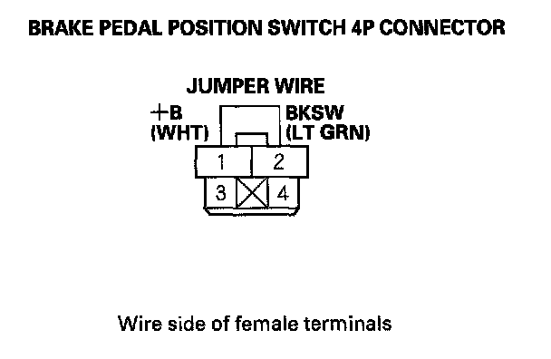
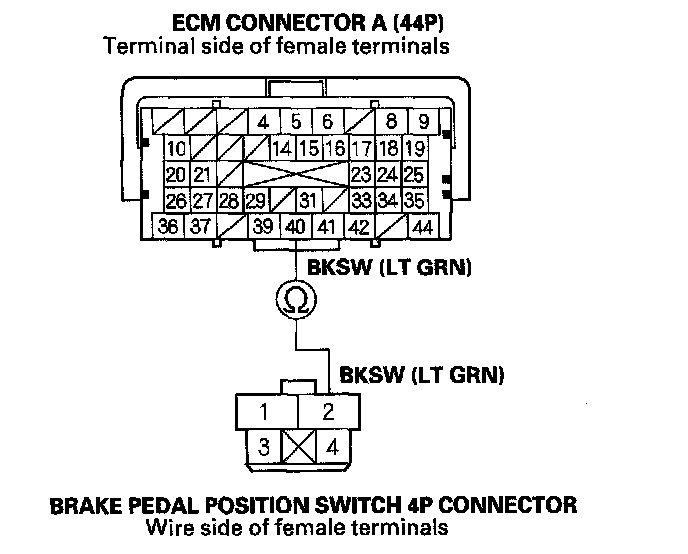

DTC 68-21
DTC 68-21: Brake Pedal Position Switch Stuck OFF1. Turn the ignition switch ON (II).
2. Check the BRK PRESS in the VSA DATA LIST with the HDS. Do not press the brake pedal.
Is there 10 MPa or less?
YES - Go to step 3.
NO - Check for brake drag or a miss-adjusted brake pedal position switch. If they are normal, replace the VSA modulator-control unit.
3. Check the BRAKE SWITCH in the VSA DATA LIST with the HDS while moving the brake pedal.
Does it indicate ON when the pedal is pressed, and OFF when pedal is released?
YES - Intermittent failure, the system is OK at this time. Check for loose terminals between the brake pedal position switch 4P connector, ECM connector A (44P), and the VSA modulator-control unit 37P connector. Refer to intermittent failures troubleshooting.
NO - Go to step 4.
4. Turn the ignition switch OFF.
5. Disconnect the brake pedal position switch 4P connector.
6. Connect brake pedal position switch 4P connector terminal No. 1 and No. 2 to with a jumper wire.

7. Turn the ignition switch ON (II).
8. Check the BRAKE SWITCH in the VSA DATA LIST with the HDS.
Does it indicate ON?
YES - Check the brake pedal position switch adjustment. If it is OK, replace the brake pedal position switch.
NO - Go to step 9.
9. Disconnect the jumper wire.
10. Turn the ignition switch OFF.
11. Short the SCS line with the HDS.
12. Disconnect ECM connector A (44P).
13. Check for continuity between brake pedal position switch 4P connector terminal No. 2 and ECM connector A (44P) terminal No. 40.

Is there continuity?
YES - Substitute a known-good ECM, then go to step 1 and recheck. If DTCs are not indicated, replace the original ECM.
NO - Repair open in the wire between the ECM and the brake pedal position switch.